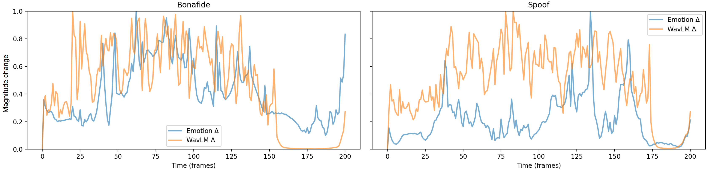
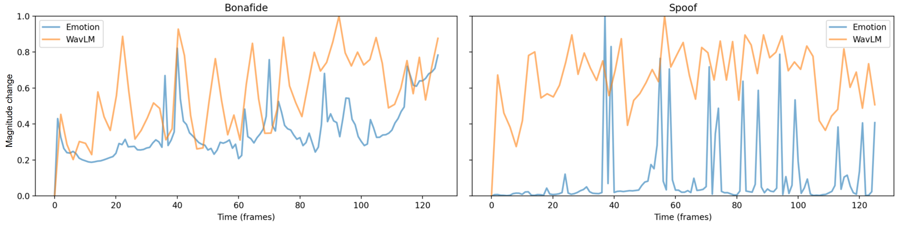
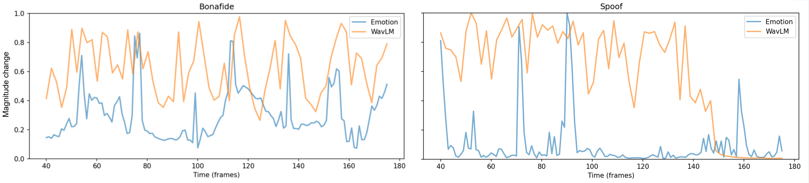

More examples of Frame-level change magnitudes of emotion and acoustic features.
We compute the frame-level change magnitudes of emotional and acoustic features using the L2 distance, and apply min–max normalization to map them to [0,1], enabling comparisons on a common scale.
- Bonafide. The two curves exhibit coherent co-variation over extended intervals; peaks and troughs are generally aligned within a small and stable temporal lag, indicating synchronization between acoustic fluctuations and emotional dynamics.
- Spoof. Clear desynchronization is observed: sharp peaks in the emotion curve often lack corresponding acoustic responses (and vice versa), accompanied by larger and unstable phase offsets, unilateral dominance, and patterns characterized by extended plateau segments interspersed with impulsive bursts.
- Takeaway. Rather than using correlation as a surrogate for authenticity—which can smooth over fine-grained misalignments—we explicitly model emotion–acoustic mismatches as direct and discriminative cues, under the premise that such mismatches are rare in bonafide speech but prevalent in spoofed audio.
|  |
 |
|  |
|  |